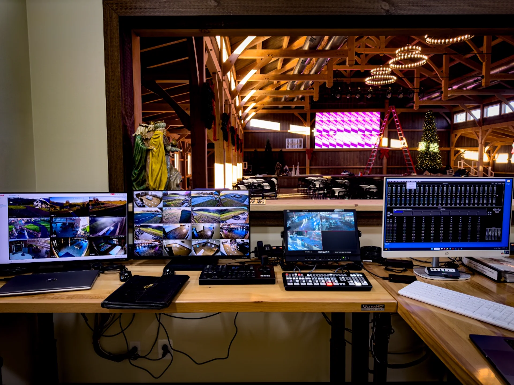
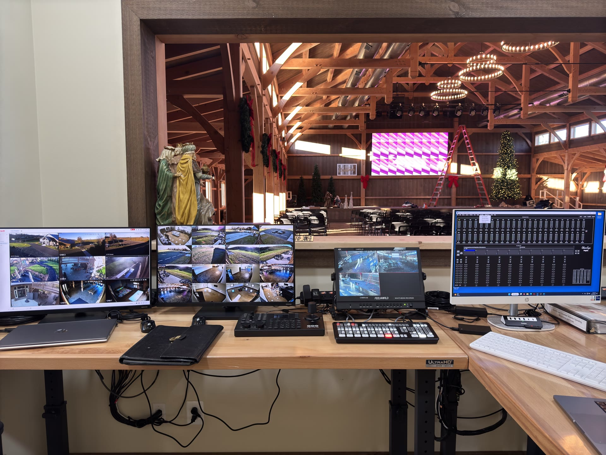
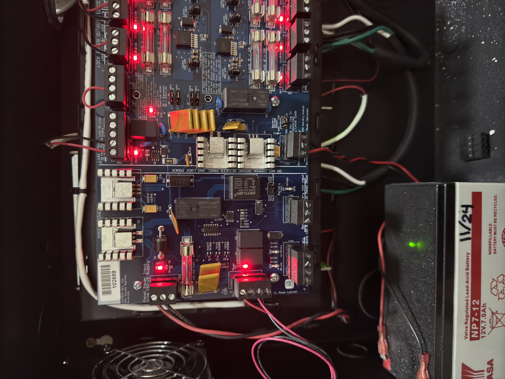

Generation Grace Church
From rack to room.

Overview
A permanent LED and lighting system designed around clear stage coverage, practical recording needs, and repeatable operation for weekly services and performances.
The installation had to combine a new large-format LED wall with programmable lighting while protecting camera sightlines, avoiding direct audience glare, and giving operators useful presets instead of a fragile one-off show file.
I configured an 18-panel DVS LED wall through a Novastar VX600, programmed 16 ADJ Stryker Wash fixtures on Chamsys MagicQ, and created color, motion, stage-wash, and warm-white looks for performance and recording.
The church received a coherent visual system that supports both live energy and clean video capture, with operational choices that can be repeated by the local team.
A system, not a pile of parts
Power, processing, rack layout, and panel behavior were checked as one chain before the visual programming layer was added.


Install week to first service
Field footage from the build: panel install in late November, late-night commissioning sessions in December, and the room in regular use the following spring.

